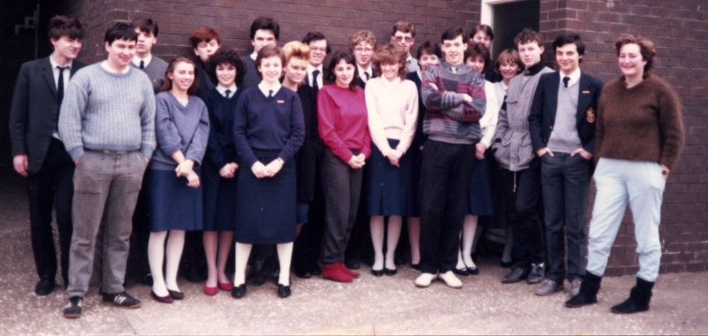

| Jim's Site | |

Last Updated: Mon Nov 27 15:04:24 GMT 2006
 |
Back Row:
Paddy Slater,
Steve Greensill,
Gerald "The" Fox,
James Heaton,
Neil Jones,
Jim Randell,
Bruce Girdlestone,
Jeremy Harrison.
Front Row:
Mike Westerdale,
Fiona Donson,
Debra Latus,
Rachel Sawkins,
Belinda Carmichael,
Sue Parker,
Marina Thompson,
Lesley Ball,
Dave Vickers,
Rebecca Wells,
Georgina Whatling,
Stuart Anguish,
Jamie Cash,
Alison Sharman.
[Not in this Photo:
Debbie Smelt,
Alayne Croft,
Andy Holmes,
Jane Waxman.]
All information on this site is copyright © 1994-2020 Jim Randell